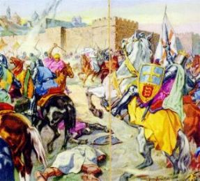

Pilatos mais uma vez,
exagerando em suas atribuições, mandou massacrar centenas de
samaritanos  no Garizim, monte sagrado da Samaria, por imaginar
que eles tramavam uma revolução contra a ocupação imperial
romana. Longino e os centuriões de seu
grupo, que pertenciam às guarnições dos oficiais Cornélius e
Cretus, tinham sido designados a participarem da desprezível
missão, mas ele não foi, por não concordar com a natureza
daquele trabalho que classificou de "sujo" e "impopular".
no Garizim, monte sagrado da Samaria, por imaginar
que eles tramavam uma revolução contra a ocupação imperial
romana. Longino e os centuriões de seu
grupo, que pertenciam às guarnições dos oficiais Cornélius e
Cretus, tinham sido designados a participarem da desprezível
missão, mas ele não foi, por não concordar com a natureza
daquele trabalho que classificou de "sujo" e "impopular".
Em consequência foi condenado pelos superiores há permanecer 30 dias enclausurado, sem direito a soldo e apenas com uma refeição e um copo de água por dia.
Preferiu a drástica sentença a sentir-se com a consciência pesada pelo resto de sua vida.
Terminado o cativeiro, tinha emagrecido quase 15 quilos, estava desnutrido e com problemas renais. Novamente a caridade de Yossef veio em seu socorro, levando-o para a sua casa.
Por outro lado, após a matança dos samaritanos, a notícia chegou rapidamente ao Senado Romano, que, indignado com o fato, ordenou a urgente presença de Pilatos para explicar o seu procedimento e justificar também muitas outras acusações que haviam contra ele.
Viajou para Roma a fim de prestar esclarecimentos sobre a sua conduta, mas tantos eram os seus crimes e desacertos, que não conseguiu justificar-se. Acabou morrendo de forma violenta.
Longino foi reabilitado... O oficial Cornélius que tinha grande estima por ele, fez questão de levar pessoalmente a notícia na casa de Yossef, onde ele se encontrava em recuperação.
Na Itália, com a morte de Tibério César, Calígula é proclamado o novo Imperador. Nesta mesma época, um poderoso exército de bárbaros, vindos do Oriente, atacou o Egito pelo porto de Alexandria. Diversas legiões romanas foram deslocadas para lá, objetivando reforçar o contingente local. E junto, seguiu a guarnição de Longino.
Antes da partida, visitou Yossef e lhe confiou à guarda da "Lança da Paixão".



Garboso e cheio de ideal, marchou resoluto ao lado de seus companheiros, conduzindo o vistoso estandarte da guarnição, servindo a pátria com dedicação e coragem.
Foram meses de intensos combates, com dificuldades de toda natureza, devido a valentia e ferocidade do inimigo, que não desanimava e não se rendia.
A campanha militar ia completar dois anos de muita luta quando Longino foi gravemente ferido. Uma espada otomana atravessou-lhe o peito e amputou o seu braço esquerdo.
Num intervalo da batalha, enquanto os exércitos refaziam os seus planos e preparavam nova investida, uma equipe de busca e salvamento, o recolheu quase sem vida numa poça de sangue, ao lado de muitos cadáveres.
Levado para a enfermaria, foi medicado com presteza e habilidade, mas permaneceu desacordado. Apenas se ouvia a sua respiração ofegante e as fracas batidas do coração. Recobrou os sentidos lentamente e permaneceu por três longas semanas ingerindo líquidos como alimento. Seu estado era desesperador.
A luta continuou renhida e com ferocidade, sem prenúncios de cessação dos combates.
Longino quando recobrou a consciência, teve um choque, pois percebeu que estava sem o braço esquerdo. Estava mutilado. Ele, que fora um homem ágil com a espada, repleto de coragem em defesa de seus ideais, dedicado ao cumprimento dos deveres de soldado e possuidor de um grande senso de responsabilidade na vida militar, ficou desolado, compreendeu que estava inutilizado para a legião. Nunca mais poderia desfilar ao lado de seus companheiros, com aquela farda que tão orgulhosamente vestia. Nunca mais poderia conduzir o vitorioso estandarte de sua companhia, lutar pelo Império, para aumentar a sua glória e seu imenso poder, assim como defendê-lo dos invasores, ajudar a dilatar os seus imensos territórios e manter a ordem em todos eles, como sempre fez. Por isso chorou, chorou muito, com sofreguidão e dolorosamente. Nenhum pensamento o consolava e nenhuma vantagem poderia substituir o seu desapontamento e a sua tristeza, por não poder continuar cultivando o ideal nacionalista de servir militarmente ao grandioso Império Romano. Estava arrasado... Idéias terríveis passavam por sua cabeça, pois não via mais "graça" na vida... Para sua existência de soldado tudo tinha acabado naquele maldito combate. Preferiria morrer do que viver daquele jeito. E por tudo isso, naquele momento não adiantavam conselhos e nem ponderações. Seu espírito estava intranquilo, nada que fizessem ou falassem, aliviava ou trazia qualquer lenitivo a sua dor.
O tratamento arrastou-se por meses, sem que aparentemente ocorresse alguma melhora animadora. Uma imensa ferida permanecia aberta no peito, exigindo constantes curativos e muitos cuidados, para não haver infecção. O seu estado era verdadeiramente desanimador.
O oficial Cornélius em todas as oportunidades, estava a seu lado, procurando reanimá-lo e encorajá-lo. Entretanto, como dispunham de poucos recursos na frente de batalha, decidiu mandá-lo de volta à Jerusalém.
Foi uma viagem difícil devido à poeira do caminho, a falta de repouso, a alimentação deficiente e a utilização de medicamentos em situação desfavorável. Chegou quase morto.
E ainda desta vez, a grande amizade de Yossef veio em seu auxílio. Sabendo do ocorrido, tratou de levá-lo para a sua casa e propiciar-lhe os tratamentos e a atenção necessária.
Instalado na casa de Yossef, chovia muito naquele dia. Os dois estavam sozinhos no quarto. Longino, quieto e taciturno. 0 amigo procurava animá-lo dizendo-lhe notícias sobre os Discípulos de JESUS, sobre as comunidades cristãs que cresciam de maneira notável. Ele apenas ouvia e permanecia em silêncio. Yossef insistiu falando-lhe sobre o "ágape", as celebrações litúrgicas e as "missas" presididas principalmente por Pedro, André e João, não se esquecendo de mencionar os muitos milagres que aconteciam pela vontade de DEUS NOSSO SENHOR.
Mas Longino permanecia calado, o seu pensamento estava distante. Na sua mente se desenrolava o filme daquela missão no Calvário. Olhou para a sua mão e viu que a mancha remanescente do sangue de JESUS havia desaparecido totalmente! Um arrepio de satisfação reanimou-lhe o espírito, ao mesmo tempo em que uma confortadora idéia dominou o seu raciocínio, fazendo crescer vigorosamente uma esperança em seu coração.
Segurando o braço de Yossef, pediu:
- Amigo, por favor, traga-me a Lança.
A ferida em seu peito era muitão grande e doía bastante com qualquer movimento. Sua respiração não era normal e, sempre que se emocionava, provocava um acesso de tosse que a fazia sangrar.
Yossef voltou trazendo
cuidadosamente a Lança e a acomodou na cama, ao lado do braço
direito  de Longino. O centurião vagarosamente virou a mão e
a segurou com decisão. Subitamente sentiu um estimulante tremor
percorrer o seu corpo, aquecendo a sua mão e sua face, como se
a circulação sanguínea tivesse aumentado ou como se ele tivesse
se aproximado do calor ardente de uma fornalha. Na fronte, o
suor brotava e escorria pelo rosto, enquanto nas pernas
e nos pés, uma poderosa sensação agradável os envolvia e
confortava. Sua alma ficou atenta, em suspense, prenunciando que
algum acontecimento notável estava para ocorrer. No peito, e
mais precisamente no local da ferida, a temperatura elevou-se
consideravelmente, aquecendo de modo impressionante toda a
região peitoral, como se ela estivesse sendo cauterizada por um
ferro em brasa. E na verdade, em poucos segundos a imensa chaga
fechou-se. Estava completamente curado.
de Longino. O centurião vagarosamente virou a mão e
a segurou com decisão. Subitamente sentiu um estimulante tremor
percorrer o seu corpo, aquecendo a sua mão e sua face, como se
a circulação sanguínea tivesse aumentado ou como se ele tivesse
se aproximado do calor ardente de uma fornalha. Na fronte, o
suor brotava e escorria pelo rosto, enquanto nas pernas
e nos pés, uma poderosa sensação agradável os envolvia e
confortava. Sua alma ficou atenta, em suspense, prenunciando que
algum acontecimento notável estava para ocorrer. No peito, e
mais precisamente no local da ferida, a temperatura elevou-se
consideravelmente, aquecendo de modo impressionante toda a
região peitoral, como se ela estivesse sendo cauterizada por um
ferro em brasa. E na verdade, em poucos segundos a imensa chaga
fechou-se. Estava completamente curado.
DEUS NOSSO SENHOR manifestou visivelmente a Sua infinita e misericordiosa bondade, cicatrizando milagrosamente a ferida no peito de Longino, curando-o instantaneamente.
De um salto, pulou da cama e vibrou de alegria e de emoção, feliz pelo milagre que acabava de acontecer pela paternal compaixão do SENHOR. Abraçado ao amigo, agradecia a DEUS sem cessar, enquanto as lágrimas desciam de seus olhos e se espalhavam pela face sorridente, que dava expansão e demonstrava o seu imenso e indescritível júbilo.


Sem o braço esquerdo, Longino foi oficialmente afastado da Legião Pretoriana, passando a receber um soldo beneficente, em paga de seus eficientes anos de serviço.